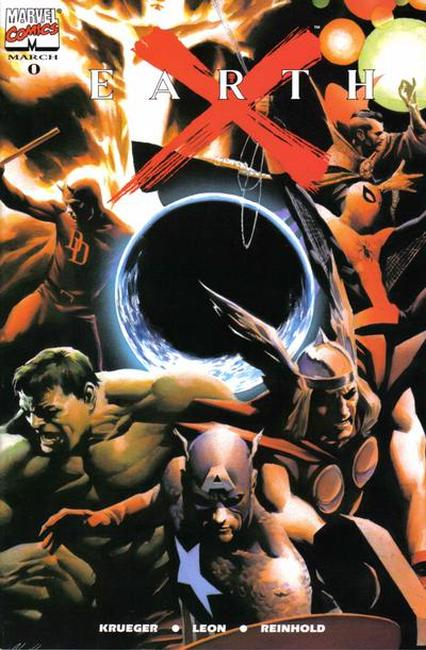
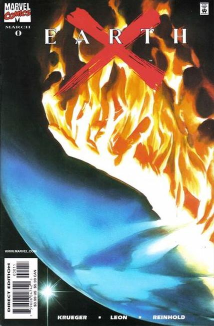

EarthX


Earth X is one of a number of planets implanted with a gestating Celestial egg. About ten years after the end of the heroic age, Black Bolt releases the mutagenic Terrigen Mists into Earth's atmosphere, seeking to transform humanity into Inhumans so that his people would not suffer persecution.